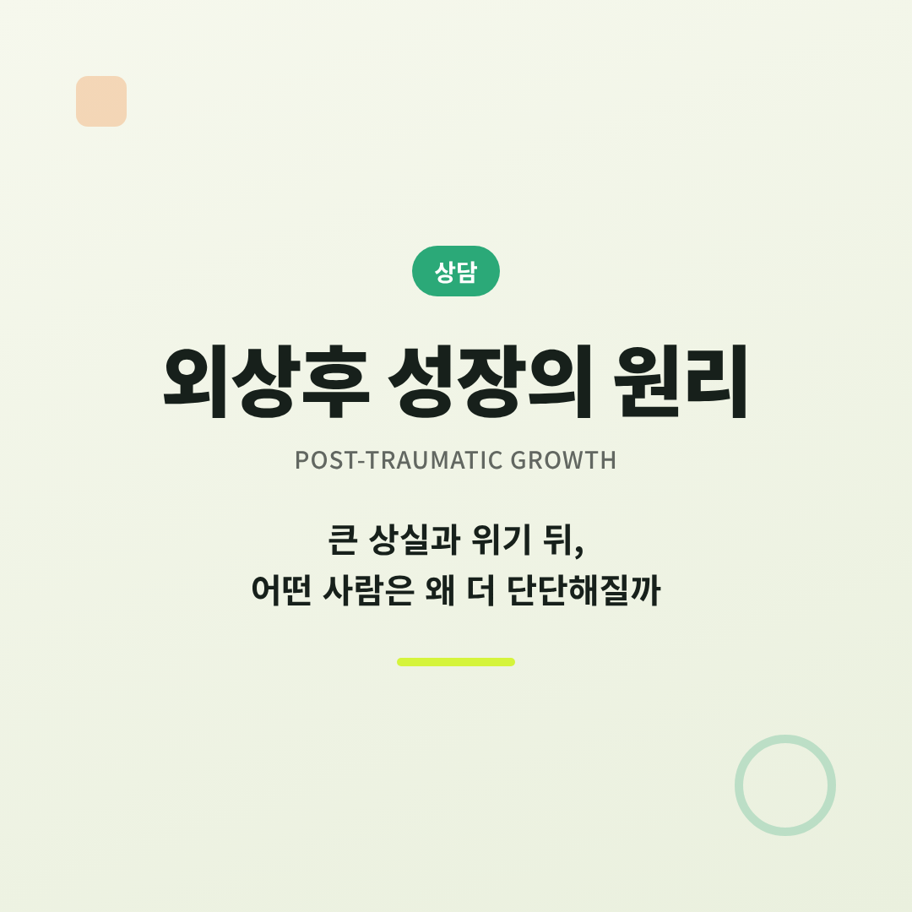
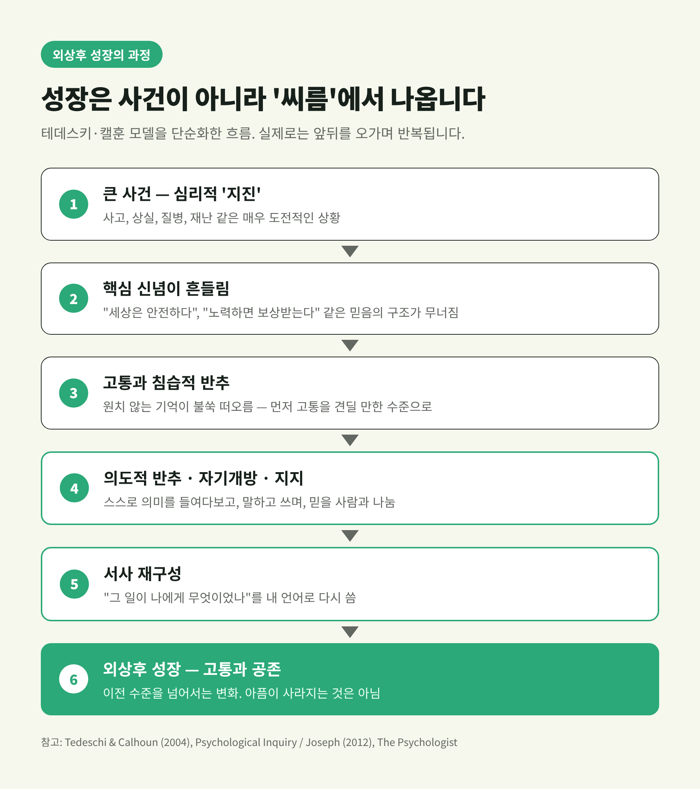
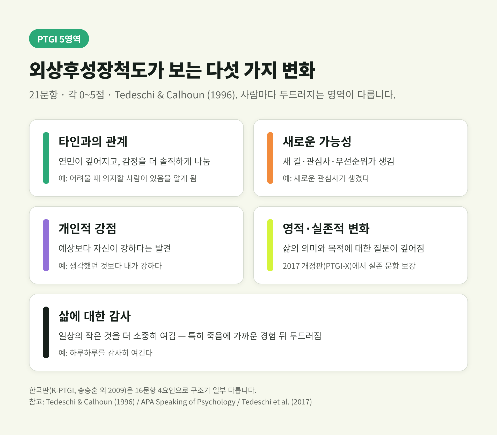
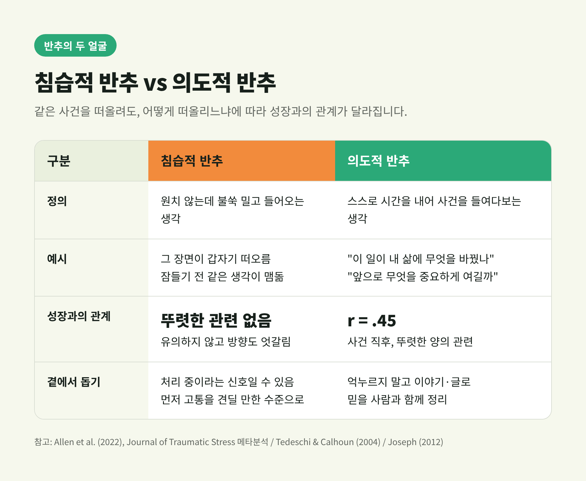
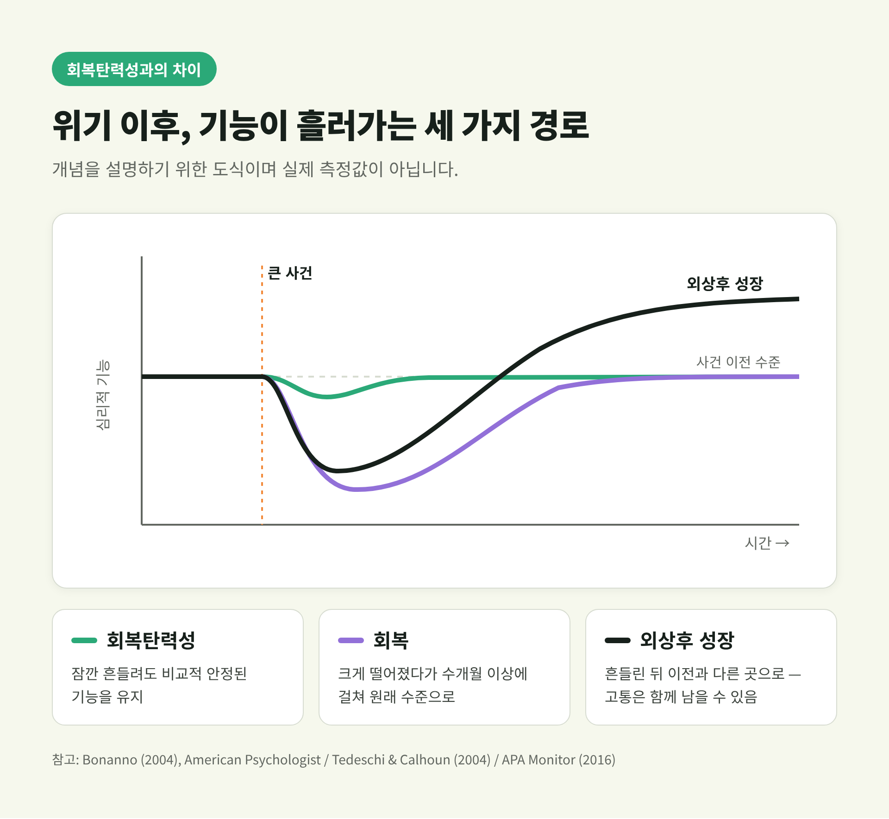
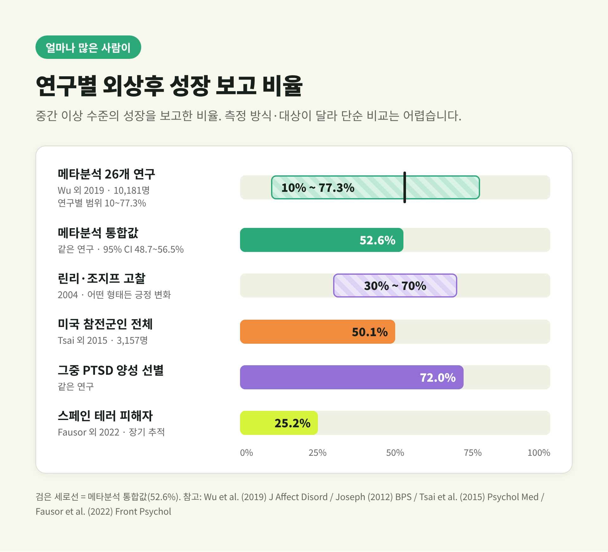
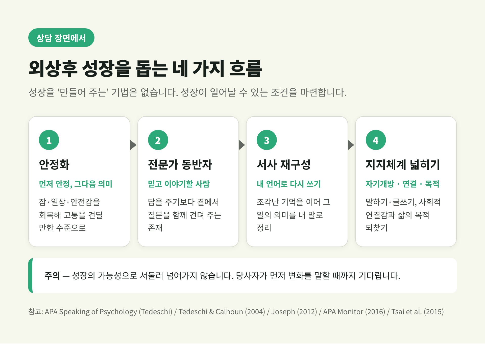

외상후 성장의 원리 — 큰 상실과 위기 뒤, 어떤 사람은 왜 더 단단해질까

이번 글에서는 '외상후 성장(Post-Traumatic Growth)'이 무엇이고 어떤 원리로 일어나는지 정리해 보겠습니다. 개념이 처음 나온 1996년 연구부터, 성장을 재는 척도, 실제 연구에서 보고되는 비율, 그리고 곁에 있는 사람이 할 수 있는 일까지 차례로 살펴봅니다.
먼저 세 줄로 요약하면 이렇습니다.
- 외상후 성장은 사건 자체가 아니라, 사건 이후 흔들린 신념을 다시 세우는 씨름에서 나옵니다.
- 연구마다 차이가 커서 성장을 보고하는 비율은 10%대에서 70%대까지 넓게 나타나며, 대표적 메타분석은 약 절반(52.6%)으로 봅니다.
- 성장은 고통을 지우지 않습니다. 둘은 함께 있을 수 있고, '성장해야 한다'는 압박은 오히려 해가 될 수 있습니다.
이 글은 심리학 연구를 소개하는 정보 글이며, 진단이나 치료를 대신하지 않습니다. 지금 견디기 어려운 상태라면 글 끝의 상담 안내를 먼저 확인해 주시기 바랍니다.
■ 외상후 성장이란 무엇인가
외상후 성장이라는 말은 심리학자 리처드 테데스키와 로렌스 캘훈이 1990년대 중반에 정립했습니다. 두 사람은 이를 "매우 도전적인 삶의 상황과 씨름한 결과로 경험하는 긍정적인 심리적 변화"라고 정의합니다.
이 정의에서 눈여겨볼 단어는 '씨름'입니다. 성장을 만드는 것은 사고나 상실 그 자체가 아닙니다. 그 뒤에 이어지는 길고 고된 소화 과정입니다.
두 연구자는 이 과정을 지진에 빗대어 설명합니다. 큰 사건은 "세상은 대체로 안전하다", "노력하면 보상받는다" 같은, 평소 의식하지 못하던 믿음의 구조를 흔들고 때로는 무너뜨립니다. 무너진 자리에 새로 짓는 구조는 이전보다 다음 충격에 더 잘 견디도록 설계될 수 있습니다. 성장은 바로 이 재건에서 생긴다는 것이 이론의 뼈대입니다.
새로운 생각은 아닙니다. 테데스키와 캘훈 스스로도 "큰 고통에서 큰 선이 나올 수 있다는 생각은 오래되었다"고 적으며, 여러 종교·철학 전통을 그 뿌리로 듭니다. 이들이 한 일은 그 오래된 직관을 측정하고 검증할 수 있는 연구의 언어로 옮긴 것입니다.
한 가지 짚어둘 점이 있습니다. 성장했다고 해서 그 사건이 '좋은 일'이 되는 것은 아닙니다. 연구자들도 사건 자체는 여전히 바라지 않았던 일로 남는다고 분명히 합니다.

■ 외상후성장척도(PTGI)가 보는 다섯 영역
1996년 두 연구자는 학술지 Journal of Traumatic Stress에 외상후성장척도(PTGI)를 발표했습니다. 초기 34개 문항에서 다듬어 최종 21개 문항이 남았고, 각 문항은 "이 위기의 결과로 이런 변화를 경험했는가"를 0점(전혀 아니다)부터 5점(매우 그렇다)까지 묻습니다. 개발 당시 대학생 604명이 참여했습니다.
분석 결과 변화는 다섯 갈래로 묶였습니다.
| 영역 | 무엇이 달라지나 | 원 척도 예시 문항 |
|---|---|---|
| 타인과의 관계 | 연민이 깊어지고 감정을 더 솔직하게 나눔 | 어려울 때 의지할 사람이 있다는 것을 알게 됨 |
| 새로운 가능성 | 새 길·관심사·우선순위가 생김 | 새로운 관심사가 생겼다 |
| 개인적 강점 | 예상보다 자신이 강하다는 발견 | 생각했던 것보다 내가 강하다는 것을 알았다 |
| 영적·실존적 변화 | 삶의 의미와 목적에 대한 질문이 깊어짐 | 영적인 문제를 더 잘 이해하게 되었다 |
| 삶에 대한 감사 | 일상의 작은 것을 더 소중히 여김 | 하루하루를 감사히 여긴다 |
모든 사람이 다섯 영역을 고르게 겪는 것은 아닙니다. 테데스키는 사람마다 강조되는 영역이 다르다고 말합니다. 예컨대 죽음에 가까운 경험을 한 사람은 '삶에 대한 감사'가, 큰 상실로 생활 방식을 바꿀 수밖에 없었던 사람은 '새로운 가능성'이 두드러지는 식입니다.
척도는 이후 조금씩 손질되었습니다. 원판의 영적 변화 영역은 문항이 두 개뿐이었고, 종교가 없는 사람의 변화를 담기 어렵다는 지적이 있었습니다. 2017년 개정판(PTGI-X)은 실존적 문항을 더해 25문항이 되었고, 미국·터키·일본 1,066명의 자료로 검증되었습니다.
우리나라에서도 2009년 송승훈 등이 한국판 척도를 타당화했습니다. 한국판은 16문항, 네 요인(자기지각의 변화, 대인관계 깊이 증가, 새로운 가능성 발견, 영적 관심 증가)으로 정리되어 원판과 구조가 일부 다릅니다. 같은 성장이라도 문화에 따라 묶이는 방식이 달라질 수 있다는 점을 보여주는 대목입니다.

■ 같은 생각, 다른 결과 — 침습적 반추와 의도적 반추
큰 일을 겪은 사람은 그 일을 계속 떠올립니다. 심리학에서는 이를 '반추'라고 부르는데, 연구자들은 반추를 두 종류로 나눕니다.
침습적 반추는 원치 않는데 불쑥 밀고 들어오는 생각입니다. 그 장면이 갑자기 떠오르거나, 잠들기 전 같은 생각이 끝없이 맴도는 경우입니다.
의도적 반추는 스스로 시간을 내어 사건을 들여다보는 생각입니다. "이 일이 내 삶에 무엇을 바꿨나", "앞으로 무엇을 중요하게 여길까"를 따져 보는 쪽입니다.
둘의 차이는 연구에서 꽤 선명하게 드러납니다. 테데스키와 캘훈이 소개한 사별 부모 연구에서, 침습적 생각은 성장과 관련이 없었습니다. 반면 상실 직후 의도적으로 의미를 찾으려 한 정도는 성장과 관련이 있었습니다.
2022년 Journal of Traumatic Stress에 실린 메타분석도 같은 방향입니다. 사건 직후의 의도적 반추와 외상후 성장의 상관은 r = .45로 뚜렷했습니다. 침습적 반추와 성장의 관계는 유의하지 않았고, 연구마다 방향도 엇갈렸습니다.
그렇다고 침습적 반추가 '나쁜 신호'인 것만은 아닙니다. 영국 심리학자 스티븐 조지프는 불쑥 떠오르는 기억과 회피 반응이 마음이 사건을 처리하는 중이라는 신호일 수 있다고 봅니다. 문제는 그 강도입니다. 고통이 너무 크면 차분히 들여다볼 여유 자체가 사라집니다. 그래서 그는 먼저 고통을 견딜 만한 수준으로 낮추는 일이 우선이라고 강조합니다.
정리하면, 저절로 떠오르는 생각이 줄어들고 스스로 들여다보는 생각이 자리를 잡아 갈 때 성장의 여지가 생깁니다. 예전엔 기억이 나를 덮쳤다면, 이제는 내가 기억을 마주 보는 쪽으로 옮겨 가는 셈입니다.

■ 회복탄력성과는 무엇이 다를까
외상후 성장은 회복탄력성과 자주 혼동됩니다. 두 개념은 비슷해 보이지만 가리키는 방향이 다릅니다.
회복탄력성 연구로 잘 알려진 조지 보나노는 회복탄력성을 큰 일을 겪고도 비교적 안정되고 건강한 기능을 유지하는 능력으로 봅니다. 잠깐 흔들릴 수는 있어도 오래 무너지지는 않는 상태입니다. 그의 2004년 논문에 따르면 사별을 겪은 사람 가운데 우울과 고통이 낮은 집단은 꾸준히 절반 안팎이었고, 만성적인 우울을 보이는 경우는 10~15% 정도였습니다. 생각보다 많은 사람이 크게 무너지지 않는다는 뜻입니다.
반면 외상후 성장은 '흔들린 뒤 이전과 다른 곳에 도착하는 것'에 가깝습니다. 테데스키와 캘훈은 성장을 "저항하고 손상되지 않는 능력을 넘어서는 변화"라고 표현합니다.
흥미로운 점이 있습니다. 테데스키는 이미 회복탄력성이 높은 사람은 오히려 외상후 성장을 덜 경험할 수 있다고 말합니다. 사건에 "뿌리째 흔들리지" 않기 때문입니다. 흔들림이 없으면 다시 지을 일도 적습니다. 대신 그는 성장을 거친 사람이 이후의 역경에 더 단단해질 수 있다고, 즉 성장이 회복탄력성을 키울 수도 있다고 봅니다.
어느 쪽이 더 낫다고 말할 수는 없습니다. 크게 흔들리지 않은 사람도, 흔들린 끝에 달라진 사람도 각자의 방식으로 위기를 건넌 것입니다.

■ 실제로 얼마나 많은 사람이 성장을 보고할까
가장 많이 인용되는 수치는 2019년 Journal of Affective Disorders에 실린 메타분석입니다. 26개 연구, 10,181명을 종합한 결과 중간 이상 수준의 외상후 성장을 보고한 비율은 52.58%였습니다. 대략 절반입니다.
다만 이 평균 뒤에는 큰 편차가 숨어 있습니다. 개별 연구의 비율은 10%에서 77.3%까지 흩어져 있었습니다. 같은 메타분석에서 60세 미만, 사건이 비교적 최근인 경우, 소방관·참전군인·중환자실 인력 같은 특정 직업군, 직접 외상을 겪은 경우에 비율이 더 높게 나타났습니다.
다른 자료들도 폭이 넓기는 마찬가지입니다.
- 린리와 조지프(2004)의 고찰: 외상 생존자의 대체로 30~70%가 어떤 형태든 긍정적 변화를 보고
- 테데스키(APA, 2016): "대략 절반에서 3분의 2" — 다만 외상 종류·시점·채점 방식에 따라 달라 단정하지 않는다고 덧붙임
- 미국 참전군인 3,157명 전국 표본(2015): 전체 50.1%, PTSD 양성 선별자에서는 72.0%
- 스페인 테러 피해자 장기 추적(2022): 25.2%
결국 "몇 퍼센트가 성장한다"는 하나의 숫자로 말하기는 어렵습니다. 다만 '드문 예외'라기보다 '상당수에게 일어날 수 있는 일'이라는 정도는 말할 수 있겠습니다.
측정 방식에 대한 비판도 함께 알아 두시면 좋겠습니다. 2009년 Psychological Science에 실린 연구는 대학생을 사건 전후로 측정해, 그 사이 외상을 겪은 122명을 분석했습니다. 그 결과 PTGI로 잰 '스스로 느끼는 성장'은 실제 전후 변화와 대체로 맞지 않았습니다. 오히려 스스로 느끼는 성장은 고통 증가와, 실제 성장은 고통 감소와 관련이 있었습니다.
연구자 쵤너와 마르커는 이를 '야누스의 얼굴'로 설명합니다. 성장 보고에는 실제로 달라진 건설적 측면과, 고통을 잠시 달래는 착각의 측면이 함께 들어 있다는 것입니다. 착각의 측면은 단기적으로 위안이 되지만, 오래 지속되면 회피가 될 수 있습니다.

■ 성장과 고통은 함께 있을 수 있습니다
외상후 성장을 '고통이 끝난 뒤의 상태'로 생각하기 쉽습니다. 연구가 보여주는 그림은 다릅니다.
테데스키와 캘훈은 성장과 고통을 "본질적으로 별개의 차원"이라고 봅니다. 한쪽이 늘면 다른 쪽이 반드시 줄어드는 관계가 아니라는 뜻입니다.
42개 연구, 11,469명을 분석한 2014년 메타분석은 성장과 외상후 스트레스 증상 사이에 곡선 관계가 직선 관계보다 더 잘 맞는다고 보고했습니다. 미국 참전군인 연구에서도 둘의 관계는 거꾸로 된 U자였습니다. 고통이 아주 적을 때는 다시 지을 것이 적고, 고통이 너무 클 때는 다시 지을 힘이 부족합니다. 그 중간 어딘가에서 성장이 가장 활발해지는 모양입니다.
테데스키도 의미를 찾았다고 해서 "어렵고 비참했던 모든 것이 지워지는 것은 아니"라고 말합니다. APA가 소개한 한 생존자는 삶에 대한 감사가 깊어진 뒤에도 플래시백과 생존자 죄책감을 함께 안고 지냈습니다.
그러니 아직 아프다고 해서 '나는 성장하지 못했다'고 판단할 이유는 없습니다. 아픔과 변화가 한 사람 안에 나란히 있는 것은 이상한 일이 아닙니다.
■ '성장해야 한다'는 압박의 함정
외상후 성장이라는 개념이 널리 알려지면서 생긴 부작용도 있습니다. "이 일을 계기로 더 성장해야지", "다 의미가 있을 거야" 같은 말이 위로처럼 쓰이는 경우입니다.
연구자들은 이 지점을 경계합니다. 테데스키와 캘훈은 성장을 필연적인 결과처럼 기대해서는 안 되며, 외상이 대개 고통스럽다는 사실이 먼저라고 적습니다. 성장은 대개 의식적으로 목표로 삼아서 오는 것도 아닙니다.
APA가 소개한 한 심리학자는 치료자가 성장의 가능성으로 "바로 뛰어드는 것"을 피하라고 말합니다. 고통을 축소하는 것처럼 들릴 수 있기 때문입니다. 그는 내담자가 먼저 어떤 긍정적인 변화를 언급할 때까지 기다린다고 합니다.
테데스키 역시 사건 직후에 성장을 생각하는 사람은 거의 없다고 말합니다. 그때는 살아내는 것이 먼저입니다. 제대로 소화하지 않고 서둘러 '성장'으로 넘어간 사람이 나중에 그 일을 다시 처리해야 했던 경우도 있었다고 합니다.
앞서 본 착각적 성장 연구를 떠올리면 이유가 분명해집니다. 재촉받아 내놓은 성장 이야기는 실제 변화가 아니라 고통을 덮는 포장일 수 있습니다.
성장은 요구할 수 있는 것이 아니라, 충분히 아파할 시간을 지나며 스스로 드러나는 것입니다.
■ 상담 장면에서는 어떻게 돕나
외상후 성장을 직접 '만들어 주는' 기법은 없습니다. 상담이 하는 일은 성장이 일어날 수 있는 조건을 마련하는 쪽에 가깝습니다.
1. 먼저 안정, 그다음 의미 조지프는 고통을 견딜 만한 수준으로 낮춘 뒤에야 노력이 드는 처리가 가능하다고 봅니다. 잠과 일상, 안전감이 어느 정도 돌아오기 전에는 의미를 묻지 않는 것이 순서입니다.
2. 전문가 동반자 테데스키는 이 과정에 필요한 사람을 '전문가 동반자(expert companion)'라고 부릅니다. 그가 강조하는 조건은 단순합니다. "이야기할 수 있고 믿을 수 있는 누군가"입니다. 답을 주는 사람이 아니라, 곁에서 함께 걸으며 질문을 견뎌 주는 사람입니다.
3. 서사 재구성 테데스키와 캘훈은 지지적인 타인이 "일어난 변화에 대한 서사를 만들 방법을 제공함으로써" 성장을 돕는다고 설명합니다. 조각난 기억을 시간 순서로 이어 보고, 그 일이 나에게 무엇이었는지를 내 언어로 다시 쓰는 작업입니다. 조지프의 THRIVE 모델도 현황 파악, 희망 모으기, 이야기 다시 쓰기, 변화 확인, 변화의 가치 인정, 행동으로 표현하기의 흐름을 제안합니다.
4. 지지체계 넓히기 글로 쓰기, 말하기, 기도 같은 자기개방과 사회적 지지는 성장을 돕는 요인으로 꼽힙니다. 미국 참전군인 연구에서도 사회적 연결감과 삶의 목적은 성장과 독립적으로 관련이 있었습니다.
아래는 이해를 돕기 위한 가상 사례입니다. 실제 인물이나 특정 내담자의 이야기가 아닙니다.
(가상 사례) 갑작스러운 사고로 가족을 잃은 30대 A씨는 처음 몇 달 동안 그날 장면이 계속 떠올라 잠을 이루지 못했습니다. 상담 초기에는 수면과 일상 회복에 집중했습니다. 몇 달 뒤 A씨는 "그 뒤로 사람들에게 고맙다는 말을 미루지 않게 됐다"고 먼저 말했습니다. 상담자는 그 말을 서두르지 않고 받아 적었고, 두 사람은 상실과 변화를 함께 담은 A씨의 이야기를 조금씩 정리해 나갔습니다. A씨의 슬픔은 사라지지 않았지만, 그 슬픔을 안고 사는 방식은 달라졌습니다.

■ 가족과 교사가 곁에서 할 수 있는 일
전문가가 아니어도 곁에 있는 사람의 역할은 큽니다. 연구에서 반복해서 확인되는 요인이 사회적 지지이기 때문입니다.
들어 주되 서두르지 않기 테데스키와 캘훈은 생존자가 이야기하거나 사건을 곱씹는 것을 억누르는 태도가 도움이 되지 않는다고 지적합니다. "이제 그만 생각해"보다 "이야기하고 싶을 때 언제든"이 낫습니다.
의미를 대신 정해 주지 않기 "다 이유가 있을 거야", "이걸로 더 강해질 거야"는 선의의 말이지만, 앞서 본 대로 압박이 될 수 있습니다. 의미는 당사자가 찾을 때 비로소 그 사람의 것이 됩니다.
생활의 짐 덜어 주기 테데스키는 사람들이 압도될 때 잠시 주의를 돌려 주거나 일을 대신 맡아 주는 주변 사람에게서 도움을 받는다고 말합니다. 식사, 장보기, 서류 처리처럼 작은 일이 큰 지지가 됩니다.
아이와 청소년에게는 속도를 맞추기 소아청소년 암 경험자 18개 연구를 묶은 메타분석에서 사회적 지지는 성장과 양의 관련을 보였습니다. 나이가 많을수록 성장을 보고할 가능성도 높았는데, 연구자들은 이를 추상적 사고가 발달하는 시기와 연결해 해석합니다. 어린아이에게 '의미'를 묻기보다 안정된 일상과 믿을 만한 어른을 먼저 마련해 주는 것이 순서일 수 있습니다. 교사라면 평소와 같은 규칙과 관심을 유지하면서, 아이가 말을 꺼낼 때 들을 수 있는 자리를 열어 두는 것만으로도 충분히 의미가 있습니다.
전문가 연결을 망설이지 않기 잠을 거의 못 자거나, 일상이 몇 주 넘게 무너져 있거나, 죽음에 대한 생각이 든다고 말한다면 혼자 감당하지 않도록 전문 상담으로 이어 주셔야 합니다.
■ 도움이 필요하다면 — 전문 상담 안내
외상 이후의 반응은 사람마다 다르고, 이 글의 내용이 모든 사람에게 그대로 들어맞지는 않습니다. 마음이 오래 무겁거나 혼자 버티기 어렵다면 전문가의 도움을 받으시길 권합니다.
- 자살예방상담전화 109 — 국번 없이 109, 24시간 운영. 2024년 1월부터 기존 1393 등 여러 상담번호를 통합해 운영되고 있습니다.
- 정신건강위기상담전화 1577-0199 — 지역 정신건강복지센터의 전문요원이 위기 상담과 정신건강 정보를 제공하고, 필요하면 의료기관으로 연결합니다. 야간·공휴일에는 광역 센터로 연결됩니다.
- 보건복지상담센터 129 — 평일 09~18시, 긴급 지원 상담은 24시간.
- 생명이 위급한 상황이라면 112 또는 119에 바로 연락해 주세요.
가까운 정신건강복지센터나 정신건강의학과, 전문 상담기관을 찾는 것도 좋은 방법입니다.
정리하면 이렇습니다. 외상후 성장은 큰 사건이 흔든 믿음을 다시 세우는 과정에서 생기는 변화이고, 다섯 영역에 걸쳐 나타날 수 있으며, 약 절반 안팎의 사람에게 보고됩니다. 그러나 그것은 고통의 끝이 아니고, 누군가에게 요구할 수 있는 숙제도 아닙니다.
"성장은 아픔 대신 오는 것이 아니라, 아픔과 함께 옵니다."
어떤 사람은 왜 위기 뒤에 더 단단해지느냐고 물으신다면, 그 사람이 특별히 강해서라기보다 무너진 자리를 들여다볼 시간과 곁에 있어 준 누군가가 있었기 때문이라고 답하겠습니다.
참고자료
- Tedeschi, R. G., & Calhoun, L. G. (1996). The Posttraumatic Growth Inventory: Measuring the positive legacy of trauma. Journal of Traumatic Stress — PubMed / 원문 PDF
- Tedeschi, R. G., & Calhoun, L. G. (2004). Posttraumatic Growth: Conceptual Foundations and Empirical Evidence. Psychological Inquiry — PDF
- APA Monitor on Psychology (2016). Growth after trauma — apa.org
- APA Speaking of Psychology. The transformation that can follow trauma (Richard Tedeschi) — apa.org
- Wu, X. et al. (2019). The prevalence of moderate-to-high posttraumatic growth: A systematic review and meta-analysis. Journal of Affective Disorders — ScienceDirect
- Fausor, R. et al. (2022). Long-Term Posttraumatic Growth in Victims of Terrorism in Spain. Frontiers in Psychology — Frontiers
- Allen, N. et al. (2022). A meta-analysis of the association between event-related rumination and posttraumatic growth. Journal of Traumatic Stress — UCC
- Shakespeare-Finch, J., & Lurie-Beck, J. (2014). A meta-analytic clarification of the relationship between posttraumatic growth and symptoms of PTSD. Journal of Anxiety Disorders — JCU
- Tsai, J. et al. (2015). Post-traumatic growth among veterans in the USA. Psychological Medicine — Cambridge
- Frazier, P. et al. (2009). Does self-reported posttraumatic growth reflect genuine positive change? Psychological Science — UMN
- Zoellner, T., & Maercker, A. (2006). Posttraumatic growth in clinical psychology. Clinical Psychology Review — PDF
- Joseph, S. (2012). What doesn't kill us… The Psychologist (BPS) — bps.org.uk
- Bonanno, G. A. (2004). Loss, trauma, and human resilience. American Psychologist — PDF
- Tedeschi, R. G. et al. (2017). The Posttraumatic Growth Inventory: A Revision Integrating Existential and Spiritual Change — Boulder Crest
- 송승훈·김교헌·이홍석·박준호 (2009). 한국판 외상후 성장 척도의 타당도 및 신뢰도 연구. 한국심리학회지: 건강 — accesson.kr
- BPS Research Digest (2018). Post-traumatic growth following childhood and adolescent cancer — bps.org.uk
- 정책브리핑 (2023.10.27). 자살예방 상담번호 '109'로 통합 — korea.kr
- 주간경향 (2025.11.03). '109'에 걸려온 전화 — weekly.khan.co.kr
- 보건복지부. 정신건강위기상담전화 1577-0199 안내 — mohw.go.kr
- 국민건강보험공단 건강소식 (2022.08). 트라우마와 회복 — nhis.or.kr